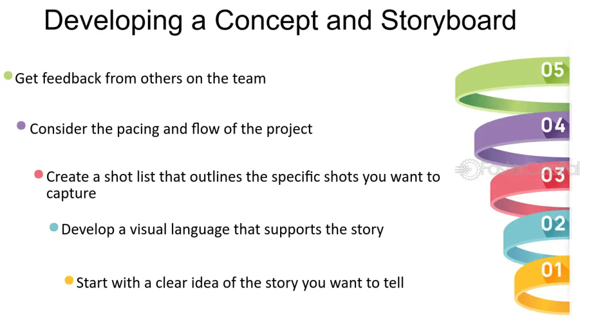

Mastering the Art of the Pitch Deck in Video Production

In the ever-evolving landscape of video production, a compelling pitch deck can make the difference between securing funding for your project or watching it fade into obscurity. Whether you're an independent filmmaker, a content creator, or part of a larger production company, understanding the nuances of crafting a persuasive pitch deck is essential. Here's a comprehensive guide to mastering this critical aspect of video production.
What is a Pitch Deck?
A pitch deck is a concise presentation that provides an overview of your video project to potential investors, production partners, or stakeholders. Its primary goal is to sell your vision, highlighting the unique elements of your project and convincing your audience of its potential for success.
https://www.devops.engineering/devaiops
Key Components of an Effective Pitch Deck
1. Introduction
Start with a captivating introduction that grabs attention immediately. This should include:
-
Project Title: A compelling title that conveys the essence of your project.
-
Logline: A one-sentence summary that encapsulates the main idea of your video.
-
Tagline: A catchy phrase that can be used in marketing to intrigue and attract an audience.
2. Synopsis
Provide a brief synopsis of your project. This should be a high-level overview, focusing on the main plot points and the core message. Keep it concise but engaging, ensuring it leaves your audience wanting to know more.
3. Visual Style
In video production, visuals are everything. Include references to the visual style you intend to use. This can be achieved through:
-
Mood Boards: A collection of images that convey the visual tone, color palette, and style of your project.
-
Concept Art: Original artwork that represents key scenes or elements.
-
Style Frames: Sample frames that show the intended look and feel of the final product.
4. Character Descriptions
Introduce the main characters in your project. Provide a brief background for each, highlighting their roles, motivations, and relationships. Visual aids such as character sketches or actor lookalikes can be beneficial here.
5. Script Excerpt
Include a short excerpt from your script. This should be a well-chosen scene that showcases your writing style and gives a glimpse of the story's tone and direction.
6. Director’s Vision
Explain the director’s vision for the project. This section should cover:
-
Creative Approach: How the director plans to bring the story to life.
-
Inspiration: Influences and inspirations that are driving the project's creative direction.
-
Technical Details: Key technical aspects such as camera techniques, special effects, and sound design.
7. Market Analysis
Provide an analysis of the target audience and market potential. This should include:
-
Target Demographic: Age, gender, interests, and viewing habits of your intended audience.
-
Comparable Projects: Examples of similar successful projects and their performance metrics.
-
Distribution Strategy: How you plan to distribute the finished product (e.g., film festivals, streaming platforms, theatrical release).
8. Budget and Funding
Outline the budget required for your project and how the funds will be allocated. This section should be transparent and realistic, including:
-
Total Budget: Overall cost of the project.
-
Breakdown: Detailed breakdown of expenses (e.g., pre-production, production, post-production).
-
Funding Goals: Amount of funding you are seeking and what you will offer in return (e.g., equity, credits, profits).
9. Team Introduction
Introduce the key members of your production team. Highlight their relevant experience, notable projects, and their roles in this project. This builds credibility and trust with potential investors.
10. Call to Action
Conclude with a clear call to action. Specify what you need from your audience—be it funding, partnership, or other forms of support—and provide contact information for follow-up.
Tips for Crafting an Outstanding Pitch Deck
-
Keep it Visual: Use high-quality images, graphics, and videos to make your pitch deck visually appealing.
-
Be Concise: Avoid lengthy text. Aim for clarity and brevity.
-
Tell a Story: Structure your pitch deck like a story, with a clear beginning, middle, and end.
-
Show Passion: Your enthusiasm for the project should be palpable. Convey why this project matters to you.
-
Practice Your Pitch: Rehearse your presentation to ensure a smooth and confident delivery.
Conclusion
A well-crafted pitch deck is a powerful tool in the world of video production. It not only showcases your project’s potential but also demonstrates your professionalism and preparedness. By following the guidelines outlined above, you can create a pitch deck that captivates your audience and brings your vision to life. Whether you're pitching to investors, production partners, or stakeholders, remember that a compelling story, clear visuals, and a passionate delivery are your keys to success.
Imported from rifaterdemsahin.com · 2024